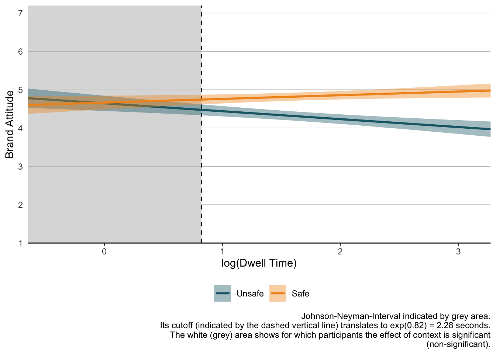

| doc_id | datetime | text | media | alt_text | likes | reposts | replies | username | handle | user_description | user_image | user_followers | commented_post | sponsored | target | condition | sequence | source |
|---|---|---|---|---|---|---|---|---|---|---|---|---|---|---|---|---|---|---|
| 34 | 20.09.24 12:01 | Dental receptionist when you don‚Äôt know if you‚Äôll be free at 2:30pm next February | https://pbs.twimg.com/media/GX3wITOX0AAEyhO?format=jpg&name=4096x4096 | NA | 247 | 21 | 15 | 9GAG ‚ù§Ô∏è Memeland | 9GAG | Building MEMELAND one meme at a time ‚Ä¢ üìß 9gag9gag.com ‚Ä¢ CEO ‚û°Ô∏è 9gagceo. | https://pbs.twimg.com/profile_images/1695636573294125056/Jj9IWW10_400x400.jpg | 16812312 | 0 | 0 | NA | A | NA | https://twitter.com/9GAG/status/1836888251941998992 |
| 35 | 19.09.24 06:01 | Me: sends ‚ÄúGood morning‚Äù text Also me: sleeps again | https://pbs.twimg.com/media/GXz48AYXMAA4-Wm?format=jpg&name=medium | NA | 475 | 118 | 19 | 9GAG ‚ù§Ô∏è Memeland | 9GAG | Building MEMELAND one meme at a time ‚Ä¢ üìß 9gag9gag.com ‚Ä¢ CEO ‚û°Ô∏è 9gagceo. | https://pbs.twimg.com/profile_images/1695636573294125056/Jj9IWW10_400x400.jpg | 16812312 | 0 | 0 | NA | A | NA | https://twitter.com/9GAG/status/1836616460271030578 |
| 36 | 09.10.24 01:00 | Trade in. Upgrade. Save. It’s a win-win-win. | https://scontent-ham3-1.xx.fbcdn.net/v/t39.35426-6/462218991_2262824920752352_7170739144707876726_n.jpg?stp=dst-jpg_s600x600&_nc_cat=105&ccb=1-7&_nc_sid=c53f8f&_nc_ohc=8iy6cVBWpdsQ7kNvgG2iyBj&_nc_ht=scontent-ham3-1.xx&_nc_gid=Au5_Py3fxlUQdue1avtqNle&oh=00_AYAy5jqXGlkDzj6L1-hJD-AJ_RXQKg_afDs2aZ1kBcV–g&oe=670E8B8A | NA | 396 | 78 | 19 | Apple | Apple | Apple.com | https://substackcdn.com/image/fetch/f_auto,q_auto:good,fl_progressive:steep/https%3A%2F%2Fsubstack-post-media.s3.amazonaws.com%2Fpublic%2Fimages%2F8ed3d547-94ff-48e1-9f20-8c14a7030a02_2000x2000.jpeg | 9712532 | 0 | 1 | https://www.apple.com/shop/buy-mac/macbook-pro/16-inch?cid=wwa-us-soc-mac-macdt-socl-rbwfm-staf-infe-cpc-mos-mobtab-amact-gnt-broa-bnlp-lfnnl-usen-sngl-static-11ar-ban-macpro-trdn-rnge-buy-na-na-na-04807071 | A | NA | https://www.facebook.com/ads/library/?active_status=active&ad_type=all&country=DE&id=513634761464978&media_type=all&search_type=page&view_all_page_id=434174436675167 |
| 37 | 10.10.24 01:00 | Track your sleep, strain, stress, recovery, and more ‚Äì on a high-powered device you‚Äôll forget you‚Äôre even wearing. | https://scontent-ham3-1.xx.fbcdn.net/v/t39.35426-6/456453687_1497228568338575_3460451067821947560_n.jpg?stp=dst-jpg_s600x600&_nc_cat=108&ccb=1-7&_nc_sid=c53f8f&_nc_ohc=s0zq2rnJIbYQ7kNvgEA5dEc&_nc_ht=scontent-ham3-1.xx&_nc_gid=Ar8I66iuX4byWiPP-Wa2iZK&oh=00_AYAcfU0N2dPWf9iX1J78Z0qw-uFC0KjQS7_Si_G21NRDmg&oe=670EA829 | NA | 203 | 16 | 41 | WHOOP | WHOOP | Your wearable health & fitness coach on a mission to unlock human performance. Join now and shop our latest styles üëá | https://cdn-1.webcatalog.io/catalog/whoop/whoop-icon-filled-256.png?v=1727793667542 | 98445 | 0 | 1 | https://www.whoop.com/ | A | NA | https://www.facebook.com/ads/library/?active_status=active&ad_type=all&country=DE&id=884008727118967&media_type=all&search_type=page&view_all_page_id=314298918730028 |
| 38 | 11.10.24 01:00 | Get powerful AI tools in a pocket-friendly package. Get the the all new Galaxy Z Flip6 and save up to $650 with trade-in. | https://scontent-ham3-1.xx.fbcdn.net/v/t39.35426-6/461785311_849420040637530_4189807201330104983_n.jpg?stp=dst-jpg_s600x600&_nc_cat=109&ccb=1-7&_nc_sid=c53f8f&_nc_ohc=_zSkXBev5O8Q7kNvgGd-3-L&_nc_ht=scontent-ham3-1.xx&_nc_gid=A6T__p18PiafwzhxKZvMoiE&oh=00_AYCfhZS2xVPfuYEfNUttcHbnivX2017oazxDp4SLd_bEng&oe=670E9DD7 | NA | 44 | 5 | 5 | Samsung US | SamsungUS | Official Twitter of Samsung USA. | https://i.pinimg.com/originals/74/79/a0/7479a0a02cf333e01e13d1b6d08af800.jpg | 75937 | 0 | 1 | https://www.samsung.com/us/smartphones/galaxy-z-flip6/buy/galaxy-z-flip6-512gb-unlocked-sm-f741uakexaa/ | A | NA | https://www.facebook.com/ads/library/?active_status=active&ad_type=all&country=DE&id=800744292023909&media_type=all&search_type=page&view_all_page_id=7224956785 |
| 39 | 12.10.24 01:00 | Bring home the Nintendo Switch™ system and get everyone in on the fun together! | https://scontent-ham3-1.xx.fbcdn.net/v/t39.35426-6/461833323_1598276837567833_385467090264512800_n.jpg?stp=dst-jpg_s600x600&_nc_cat=108&ccb=1-7&_nc_sid=c53f8f&_nc_ohc=Yld5Mu9Ls54Q7kNvgGlM207&_nc_ht=scontent-ham3-1.xx&_nc_gid=AGzr0CP_zIG-20aQne5-Az6&oh=00_AYDry9MlNds6mS_mzOBiFatTpHy9qdqDPTMda84KJy3Gjw&oe=670E8CA6 | NA | 9339 | 1903 | 240 | Nintendo of America | NintendoAmerica | Welcome to the official Nintendo profile for gaming news! We’re listening, too. For ESRB ratings go to http://esrb.org | https://pbs.twimg.com/profile_images/1539293929031421958/cy-uzR2t_400x400.jpg | 13948183 | 0 | 1 | https://www.nintendo.com/us/store/products/nintendo-switch-lite-gray/ | A | NA | https://www.facebook.com/ads/library/?active_status=active&ad_type=all&country=DE&id=1053573702629422&media_type=all&search_type=page&view_all_page_id=1125429570886433 |
| 40 | 13.10.24 01:00 | Legendary noise cancellation now comes in a bold new shade. Shop Bose QuietComfort Headphones in limited-edition Sandstone. | https://scontent-ham3-1.xx.fbcdn.net/v/t39.35426-6/449312743_2744495332380149_827947157860749378_n.jpg?stp=dst-jpg_s600x600&_nc_cat=102&ccb=1-7&_nc_sid=c53f8f&nc_ohc=RZ2kDljucacQ7kNvgE-0db&_nc_ht=scontent-ham3-1.xx&_nc_gid=AVwJcHYfDMnOHYjQepUXZCO&oh=00_AYAFyDp3EHj3Gk_H1z_ApTeyOJuRPDKNMZ6XvR4slUC5qw&oe=670EB46D | NA | 11039 | 6099 | 230 | Bose | Bose | Sound Is Power. For support, follow BoseService. | https://logodownload.org/wp-content/uploads/2019/07/bose-logo-3.png | 2339194 | 0 | 1 | https://www.bose.com/p/noise-cancelling-headphones/quietcomfort-acoustic-noise-cancelling-headphones/QC-HEADPHONEARN.html | A | NA | https://www.facebook.com/ads/library/?id=471047825791376 |
4 Case Studies
We conducted two studies to demonstrate DICE as a research tool and its empirical capabilities. These studies serve three purposes: (1) demonstrating how researchers can implement DICE studies in practice, (2) showcasing the platform’s unique behavioral tracking capabilities, and (3) illustrating the frontend participant experience and researcher workflow in the backend of DICE. The first case study examines competitive advertising environments where multiple brands in the same product category compete for user attention within a feed. By tracking attention patterns across multiple sponsored posts, this study illustrates how DICE’s behavioral tracking capabilities allow to examine the relationship between the specific feed position of a post, user attention, and brand recall when brands compete with both organic and competing sponsored posts. The second case study illustrates DICE’s ability to maintain tight experimental control over feed composition to study context effects (here, we focus on the topical issue of brand safety concerns, i.e., how surrounding content can negatively affect brand perceptions on social media).
Together, these two illustrative studies show DICE’s capability to test research questions that are difficult to study with existing paradigms while maintaining high experimental control, high ecological validity, and access to detailed behavioral data.
4.1 Case Study 1: When Do Users Remember Ads? Dwell Time Outperforms Position in Explaining Recall
While investigating which content cuts through the clutter (Ordenes et al. 2019), we focus on the content’s position rather than examining a sponsored post’s characteristics (see, e.g., Berger, Moe, and Schweidel 2023 who study the content’s linguistic features). Specifically, we examine whether a sponsored post’s position in a social media feed affects its recall, building on research about recency and primacy effects (see, e.g., Wedel and Pieters 2000; Murphy, Hofacker, and Mizerski 2006; Agarwal, Hosanagar, and Smith 2011). A naïve model reveals a primacy effect, where sponsored posts in higher positions show increased likelihood of recall. However, this effect disappears when controlling for dwell time. Furthermore, our analysis demonstrates that longer dwell times correlate with higher recall probability for sponsored posts.
Using position effects in social media advertising as an illustrative example, the primary goal of this case study is to demonstrate practical applications of the DICE app’s dwell time measurement. By showing how to create a feed and then link post-specific dwell times with self-reported recall measures, we provide a practical template for researchers who intend to combine DICE’s behavioral measures with survey data elicited in tools such as Qualtrics.
4.1.1 Experimental Design
To investigate the relationship between ad placement and recall, we simulated social media feeds containing both organic and sponsored posts. Whereas the set of organic and sponsored posts was the same for all participants, the sequence in which the participants were exposed to these posts was unique for every participant as we randomized the sequence between subjects.
Aiming to create ecologically valid stimuli, we populated our experimental feed with thrity-five memes (organic posts) and five consumer electronics advertisements (sponsored posts). Accordingly, we collected memes from 9gag, a popular account with more than sixteen million followers on X (formerly called “Twitter”) that is well known for its internet meme collections. The choice of memes as organic content was deliberate, given their dominant role in social media engagement, particularly among younger users: Malodia et al. (2022) report that 75% of social media users aged 13 to 36 regularly share memes, and 30% of these users share memes daily, with Instagram users sharing over 1 million meme-related posts per day in 2020 (Instagram 2020). This prevalence of meme consumption among younger demographics informed both our recruiting strategy and our selection of sponsored content: we recruited 300 young American participants (\(M_{age}\)=29.42 years; 53% female) from Prolific and selected consumer electronics advertisements from established brands (i.e., Apple, Bose, Nintendo, Samsung, Whoop) retrieved from Facebook’s Ad Library–a publicly accessible database that archives advertisements running across Meta’s platforms. The selected sponsored posts showed natural variation in their characteristics, reflecting the diversity of ads users encounter in their daily social media use. This approach aligns with recent methodological work on stimulus sampling (Simonsohn, Montealegre, and Evangelidis 2024) which demonstrates that in studies focused on a single manipulated variable (a sponsored post’s position in our case), using diverse stimuli helps ensure effects are not driven by idiosyncratic characteristics of any particular advertisement, increasing both internal and ecological validity.
Figure 4.1 provides sampled screenshots to illustrating the fully randomized positioning of sponsored and organic content in the study.

4.1.2 Procedure
Participants browsed the simulated feed on their own devices (72% Desktop, 25% Mobile, and 3% Tablet), allowing for unobtrusive measurement of dwell time for each post. After scrolling through the feed, we redirected participants to a Qualtrics survey in which they first provided demographic information as a filler task. Subsequently, we measured whether participants recalled seeing the ads by the five brands in the feed. Specifically, we measured cued recall for which we showed participants a list of twenty brands from different categories and asked them to indicate whether they recalled seeing them (see, e.g., Campbell and Keller 2003; Simonov, Valletti, and Veiga 2024). We also included a no-recall option. The results for both recall measures were highly consistent; we report the cued recall results in the manuscript for parsimony (the results for unaided recall are included on our OSF repository). Finally, participants read a debriefing and were redirected to Prolific.
4.1.3 Stimuli
We next illustrate how we configured the feed to match our experimental design. Specifically, we created a CSV file that contains forty rows where each row represents one unique post. To guarantee that the order in which the posts were displayed was randomized between participants, we left the <sequence> column empty. Whenever the DICE app encounters missing values in that column, it assigns random numbers to that cell. Hence, leaving some, or in our case, all cells of this column empty, leads to random numbers and thus, random sequences in which the posts are displayed. Next, we specified the Boolean <sponsored> column and assigned a 0 to all thirty-five organic posts and a 1 to the five sponsored posts. For these sponsored posts, we also specified a <target> which is the URL of landing page participants are directed to if they click on the corresponding sponsored post. As a final step, we uploaded the CSV file to an online repository to create a URL that can be passed to DICE’s web app.
Table 4.1 shows an excerpt of the exact CSV files we used to create the stimuli for this study. You can download that file here.
4.1.4 Data
4.1.4.1 Final Sample
Our dataset comprises 300 participants and 10,377 observations at the participant \(\times\) post level. In our analyses, we only focus on sponsored posts which is why our final sample comprises 1,283 observations on the participant \(\times\) sponsored post level. This is less than the expected five observations per participant due to two reasons. First, due to connectivity issues: no dwell time data were recorded for around 3.67% of individual–sponsored post pairs. Second, we excluded the first and last two posts of each feed (i.e., \(300 \times 4\) observations) from our analysis, as meaningful dwell times couldn’t be determined for these. This is because participants were familiarizing themselves with the interface at the start and deciding whether to proceed to the next stage of the study at the end of the feeds.
4.1.4.2 Variables
Position in feed (subsequently referred to only as “position”) is our main independent variable. Because we randomized the order in which the content appeared (i.e., position acts as a within-subject factor) and because we excluded observations positioned at the beginning and the end of the feed, we observe a sample mean of 20.58 as well as a minimum and maximum of 3 and 38, respectively. As, we randomly manipulated the position in which each post was displayed exogenously between subjects, each sequence in which participants browsed through ads was unique.
In ?fig-brand-order, each line represents the number of times a sponsored post for a specific brand appeared at each position across all participants. As the placements were fully randomized, we observed some random variability that naturally fluctuates around the expected value of 7.5 impressions per position (as indicated by dashed lines).1 Taken together, this suggests that randomization within the DICE app was effective.
We measured dwell times as the number of seconds at least 50 percent of a post’s pixels were visible on screen. We log-transformed the raw dwell times to reduce skewness. Unlike Case Study 2, where we focused on a single post (i.e., the KLM ad), the focal posts of interest (i.e., ads) in this Case Study vary in their post height. Thus, and as described in the “Behavioral Data” section of the DICE App Implementation, we normalized our dwell time measure by dividing it by post height to control for differently sized posts (i.e., the height in pixels of the corresponding sponsored post on a participant’s screen).
We also tracked actual reactions to the content such as likes and replies to individual posts. In the full sample featuring both organic and sponsored posts, we observed 144 (30) participants who liked (replied to) any post in the feed. These numbers are obviously lower for sponsored posts (ads shown in the feed) with 32 (4) participants liked (replied to) at least one sponsored post or ad. Given the low incident rate, we did not analyze these likes and comments any further.
Table 4.2 shows an excerpt of the processed data to illustrate its nested (i.e., “long”) structure.
| Participant ID | Post ID | Sponsored Post | Brand | Position in Feed | Likes | Replies | Seconds in Viewport | log(Seconds in Viewport) | Post Height | Dwell Time | Age | Female | Desktop | Recall Apple | Recall Bose | Recall Nintendo | Recall Samsung | Recall Whoop |
|---|---|---|---|---|---|---|---|---|---|---|---|---|---|---|---|---|---|---|
| 66ee9436fdc916ec83068569 | 14 | FALSE | NA | 35 | FALSE | FALSE | 0.083 | -2.4889147 | 383 | -0.0064985 | 33 | TRUE | FALSE | TRUE | FALSE | FALSE | FALSE | FALSE |
| 66ee9436fdc916ec83068569 | 13 | FALSE | NA | 36 | FALSE | FALSE | 0.117 | -2.1455813 | 420 | -0.0051085 | 33 | TRUE | FALSE | TRUE | FALSE | FALSE | FALSE | FALSE |
| 66ee9436fdc916ec83068569 | 18 | FALSE | NA | 37 | FALSE | FALSE | 0.150 | -1.8971200 | 416 | -0.0045604 | 33 | TRUE | FALSE | TRUE | FALSE | FALSE | FALSE | FALSE |
| 66ee9436fdc916ec83068569 | 30 | FALSE | NA | 38 | FALSE | FALSE | 0.167 | -1.7897615 | 402 | -0.0044521 | 33 | TRUE | FALSE | TRUE | FALSE | FALSE | FALSE | FALSE |
| 66ee9436fdc916ec83068569 | 19 | FALSE | NA | 39 | FALSE | FALSE | 0.234 | -1.4524342 | 388 | -0.0037434 | 33 | TRUE | FALSE | TRUE | FALSE | FALSE | FALSE | FALSE |
| 66ee9436fdc916ec83068569 | 34 | FALSE | NA | 40 | FALSE | FALSE | 2.705 | 0.9951019 | 385 | 0.0025847 | 33 | TRUE | FALSE | TRUE | FALSE | FALSE | FALSE | FALSE |
| 66f043f0c38f7c2ec60770e4 | 3 | FALSE | NA | 1 | FALSE | FALSE | 4.614 | 1.5290952 | 622 | 0.0024584 | 30 | TRUE | TRUE | FALSE | FALSE | FALSE | FALSE | FALSE |
| 66f043f0c38f7c2ec60770e4 | 24 | FALSE | NA | 2 | FALSE | FALSE | 0.376 | -0.9781661 | 507 | -0.0019293 | 30 | TRUE | TRUE | FALSE | FALSE | FALSE | FALSE | FALSE |
| 66f043f0c38f7c2ec60770e4 | 4 | FALSE | NA | 3 | FALSE | FALSE | 1.042 | 0.0411419 | 512 | 0.0000804 | 30 | TRUE | TRUE | FALSE | FALSE | FALSE | FALSE | FALSE |
| 66f043f0c38f7c2ec60770e4 | 36 | TRUE | Apple | 4 | FALSE | FALSE | 0.180 | -1.7147984 | 622 | -0.0027569 | 30 | TRUE | TRUE | FALSE | FALSE | FALSE | FALSE | FALSE |
| 66f043f0c38f7c2ec60770e4 | 37 | TRUE | Whoop | 5 | FALSE | FALSE | 0.382 | -0.9623347 | 646 | -0.0014897 | 30 | TRUE | TRUE | FALSE | FALSE | FALSE | FALSE | FALSE |
4.1.5 Empirical Model
To estimate the impact of ad positioning on brand recall in social media feeds, we employed a mixed-effects logistic regression model with brand fixed effects to account for the binary nature of recall outcome (recalled vs. not recalled) while considering the hierarchical structure of our data: multiple observations nested within participants and ads. We assume a binomial distribution as each observation represents a single trial with two possible outcomes (recalled vs. not recalled), where \(p_{ij}\) represents the probability of participant \(i\) recalling brand \(j\):
\[ \text{recall}_{ij} \sim \text{Binomial}(1, p_{ij}) \]
We estimated the effect of ad positioning on recall and captured between-participant heterogeneity through random intercepts while controlling for brand fixed effects:
\[ \text{logit}(p_{ij}) = a + a_i + \mathbf{x}_{ij} \mathbf{b} + \sum_{j=1}^{J-1} \gamma_j \text{Brand}_j \]
where \(a\) is the global intercept, \(a_i\) is the participant-specific random intercept, \(\mathbf{x}_{ij}\) is a vector of continuous predictors (e.g., position and dwell time) with corresponding coefficient vector \(\mathbf{b}\), and \(\gamma_j\) represents the fixed effects for each brand \(j\) (with Apple serving as the reference category). The random participant effects \(a_i\) follows from our experimental design, given that the random assignment of ad positions ensures zero correlation between participant characteristics and the explanatory variables. Brand effects are treated as fixed parameters rather than random effects, allowing for potential correlation between brand characteristics and positioning.
The random participant effects \(a_i\) follows from our experimental design, given that the random assignment of ad positions ensures zero correlation between participant characteristics and the explanatory variables. Brand effects are treated as fixed parameters rather than random effects, allowing for potential correlation between brand characteristics and core explanatory variables such as dwell time.
Finally, for better comparability between models, we z-standardized all explanatory variables. The regression coefficients effects on the dependent variable are therefore quantified in standard deviations. This allowed us to compare the relative effect sizes between regression models. Because of the logit link, the odds ratio is \(100 \times (e^{\beta} - 1)\), which gives the percentage change in the odds of recall.
4.1.6 Results
We found a significant negative effect of position on recall (\(\beta_1 = -0.207\), \(SE = 0.028\), \(p < 0.001\); see Model 1 in ?tbl-mixed-effects), suggesting a primacy effect such that the further up (down) in a feed an ad is displayed, the more (less) participants recall seeing the ad. We also examined potential non-linear effects of position (i.e., to assess whether especially the beginning and end of a feed promotes ad recall) by adding a quadratic term, but found no statistically significant effect.
As shown in Model 2 in ?tbl-mixed-effects, we found that the individual dwell time of a user predicts ad recall (\(\beta_3\) = 0.714, p < 0.001). More importantly, we also found that the dwell time devoted to is the actual attention devoted to an ad beyond was a stronger predictor of recall than just its position in a feed. Specifically, Model 3, including both position and dwell time, found that the effect of position becomes non-significant (\(\beta_1\) = -0.104, p > 0.05), while the dwell time coefficient remains unchanged and significant (\(\beta_3\) = 0.694, p < 0.001). The minimal change in the Akaike information criterion when adding the position coefficients between Model 2 and Model 3 suggests that including ad position does not improve the model’s fit to the data. This supports the notion that dwell time is the more proximal factor in predicting ad recall. Our results also suggest that position may not provide significant additional explanatory power once dwell time is accounted for.
?(caption)
|
|
|||
|
|
log(Odds Ratio)
|
||
|
|
|
||
|
|
Recall
|
||
|
|
(1)
|
(2)
|
(3)
|
|
|
|||
|
Position
|
-0.207**
|
|
-0.104
|
|
|
(0.070)
|
|
(0.072)
|
|
|
|
|
|
|
(Position)²
|
0.028
|
|
-0.030
|
|
|
(0.077)
|
|
(0.079)
|
|
|
|
|
|
|
Dwell Time
|
|
0.714***
|
0.693***
|
|
|
|
(0.091)
|
(0.092)
|
|
|
|
|
|
|
Constant
|
-0.821***
|
-1.118***
|
-1.080***
|
|
|
(0.170)
|
(0.172)
|
(0.186)
|
|
|
|
|
|
|
|
|||
|
Brand Fixed Effects
|
Yes
|
Yes
|
Yes
|
|
Observations
|
1,283
|
1,283
|
1,283
|
|
Akaike Inf. Crit.
|
1,476.367
|
1,405.073
|
1,406.904
|
|
|
|||
|
Note:
|
p<0.05; p<0.01; p<0.001
|
||
|
|
Standard errors in parentheses.
|
||
|
|
Explanatory variables are z-standardized.
|
||
Ad recall also significantly varied across brands. Figure 4.2 (Panel A) visualizes the relationship between dwell time and position across the five brands in our study. We observe a consistent negative relationship between position and dwell time across all brands, with posts placed later in the feed receiving less attention.

However, we also find that Apple and Nintendo generated significantly higher dwell time than all other brands (see the parallel upward shift of the regression line compared to Bose, Samsung, and Whoop). Panel B further shows how dwell time predicts recall probability consistently across all brands. The positive slope of all curves in Panel B indicates that increased dwell time enhances recall probability across all brands consistently, even for less familiar brands like Whoop. This suggests that while brands may differ in their baseline dwell time due to potential familiarity differences, we find a highly consistent empirical regularity of how dwell time ultimately predicts recall.
4.1.7 Discussion
Our second study demonstrates two core capabilities of DICE while demonstrating additional substantive insights about advertising effectiveness on social media. First, we demonstrate that dwell time is a stronger predictor of ad recall than the mere position of an ad, showing how DICE’s behavioral tracking data can uncover attention mechanisms that are difficult to study with existing paradigms. Second, Study 2 demonstrates how researchers can effectively combine behavioral engagement data with self-reports from conventional survey measures (e.g., participant recall of branded content). Combined with Study 1, we demonstrate several potential uses of the behavioral engagement data generated by the DICE app, ranging from basic data quality to proxies for attention explain downstream outcomes (e.g., ad recall).
4.2 Case Study 2: When Does Context Harm Brands? Manipulating Feed Composition to Study Brand Safety
The primary goal of our second case study is to demonstrate another feature of the DICE app: the experimental manipulation of (advertising) context. Whereas Case Study 1 used a single set of social media posts and randomized its display sequence, this study creates different sets of content for different groups of participants while keeping one sponsored post constant across all groups. Accordingly, we systematically manipulate the context in which participants encounter the sponsored post by varying the surrounding content they see.
We demonstrate this capability by examining brand safety in social media advertising. Brand safety refers to strategies and measures dedicated to ensuring that advertising does not appear in contexts that could harm brand reputation (Fournier and Srinivasan 2023; Porter 2021). This concern is particularly relevant for social media advertising, where platforms use automated systems to place ads in dynamic, user-generated content environments because, these systems often lack the nuanced understanding needed to identify potentially problematic contexts. Industry reports suggest that 75% of brands have experienced brand-unsafe exposures (GumGum Inc. 2017), with ads frequently appearing alongside problematic content despite blacklists and negative targeting strategies (Simonov, Valletti, and Veiga 2024; Ahmad et al. 2024). Not solely by controlling but by manipulating the sponsored post’s context (i.e., organic posts), the DICE app allows us to investigate sensitive challenges in an experimental setting without risking actual brand reputation damage (which would make field settings infeasible).
4.2.1 Experimental Design
To examine how brand-(un)safe contexts affect brand perceptions, we created two social media feeds that were identical in structure but varied in their content surrounding a sponsored post. Figure 4.3 displays exemplary screenshots of the implementation in DICE: both feeds contained the same number of organic posts and one identical sponsored post, with the only difference being the thematic focus of the organic content.
To ensure ecological validity, we populated our experimental feeds with actual tweets covering Brazil: one feed featured coverage of severe flooding that claimed at least 95 lives (Buschschlüter 2024), while the other contained typical Brazil-related content including Madonna’s free concert in Rio de Janeiro, soccer matches, and travel experiences. This approach mirrors real-world scenarios where automated ad placement systems, operating primarily on keywords (e.g., “Brazil”), might place the same ad in vastly different contextual environments.
The sponsored post, a fictitious KLM advertisement promoting flights to Brazil, was identical across both conditions. The creative featured the tagline: “Brazil’s wild beauty calls! Experience nature like never before. Book your breathtaking adventure with KLM.” This messaging, while typically appropriate for airline promotion, becomes strikingly insensitive when juxtaposed against a feed focusing on the natural disaster in the region advertised, which is precisely the type of contextual mismatch that automated systems might create.
To control for position effects identified in Case Study 1, we placed KLM’s sponsored post in fifth position in both conditions. While this position remained constant, we randomized the sequence of organic posts between subjects to ensure any effects weren’t driven by specific content adjacencies.
4.2.2 Procedure
As in the first case study, participants browsed the simulated feed on their own devices (75% desktop, 21% mobile, and 4% tablet). After scrolling through the feed, we redirected participants to a Qualtrics survey in which they first provided demographic information as a filler task. Next, we measured participants’ brand perceptions by assessing their attitude toward KLM using three seven-point scales (1 = “Negative/Unfavorable/Dislike” and 7 = “Positive/Favorable/Like”; \(\alpha\) = 0.96). Finally, we assessed participants’ awareness of the Brazil flooding before debriefing the study and redirected them to the recruitment platform (Prolific). We provide our stimuli, materials, data, and analysis code on the Open Science Framework.
4.2.3 Stimuli
Building on the CSV file structure introduced in Case Study 1, we created a file containing two distinct sets of content: nineteen organic posts for each experimental condition, plus one sponsored post that needed to appear in both feeds. To ensure the sponsored post would appear in both conditions while maintaining DICE’s CSV structure, we entered the sponsored post twice in the file - once for each condition. This resulted in a file with forty rows total: nineteen organic posts for each condition plus the sponsored post appearing twice. Each post’s content was specified in columns such as <text> and <username>. We used the <condition> parameter to distinguish between our “appropriate” (brand-safe) and “inappropriate” (brand-unsafe) feeds, assigning each row (i.e., each post) to its respective condition. Similar to Case Study 1, we left the <sequence> column empty for organic posts to enable randomization, with one key exception: the KLM sponsored post was assigned a fixed <sequence> value of “5” to ensure consistent positioning across conditions. We marked this post as sponsored using the <sponsored> parameter and included a KLM landing page URL in the <target> column for participants who clicked on the ad. The resulting CSV file was uploaded to an online repository to generate a URL for the DICE app.
Table 4.3 shows an excerpt of the exact CSV files we used to create the stimuli for this study. You can download that file here.
| doc_id | datetime | text | media | alt_text | likes | reposts | replies | username | handle | user_description | user_image | user_followers | sponsored | target | condition | sequence | commented_post | source |
|---|---|---|---|---|---|---|---|---|---|---|---|---|---|---|---|---|---|---|
| 5 | 08.05.24 09:30 | Brazil’s wild beauty calls! Experience nature like never before. Book your breathtaking adventure with KLM. | https://i.postimg.cc/MGQtKsh2/brazil-wild-beauty.webp | NA | 336 | 52 | 9 | KLM | KLM | Official global account of KLM. FAQ about flying from AMS: http://klmf.ly/Schiphol. To learn how we can assist you, please check: http://klmf.ly/ContactCentre. | https://pbs.twimg.com/profile_images/1807736403385561088/HaxXwA-t_400x400.jpg | 2223756 | 1 | https://www.klm.com.br/en-br/flights-from-brazil | appropriate | 5 | 0 | NA |
| 16 | 08.05.24 09:30 | Madonna shines in a custom Jean Paul Gaultier Haute Couture once again as she took the stage for her legendary grand finale for her ‚ÄòCelebration Tour‚Äô in Brazil üíö | https://pbs.twimg.com/media/GM5QxcZXMAA4nDR?format=jpg&name=large | NA | 17123 | 2123 | 117 | JPGaultier | Jean Paul Gaultier | Jean Paul Gaultier | https://pbs.twimg.com/profile_images/1780899814722473984/u02Lhtw4_400x400.jpg | 1423123 | 0 | NA | appropriate | NA | 0 | https://twitter.com/JPGaultier/status/1787455029789499619 |
| 17 | 08.05.24 09:30 | Waved Woodpecker (Celeus undatus) in Brazil üê¶üáßüá∑ üì∑ Schuler Franz ¬©Ô∏è #Brazil #nature #wildlife #photography | https://pbs.twimg.com/media/GHOD_EjXkAACxmS?format=jpg&name=medium | NA | 1109 | 280 | 16 | Liberta Cherguia üá™üá∫ | MbarkCherguia | üå≥ Nature lover | üì∏ Capturing nature‚Äôs beauty | Open to collaborations | Follow for stunning landscapes! üåÑ | Check out Geniustechw for art, tech & culture | https://pbs.twimg.com/profile_images/1748768033231798272/yx0DbMM4_400x400.jpg | 23249 | 0 | NA | appropriate | NA | 0 | https://twitter.com/MbarkCherguia/status/1761897016681017449 |
| 18 | 08.05.24 09:30 | Using sustainable materials and innovative folding doors, Casa Sui promises an interactive living space. Through its nature-inspired design, it perfectly blends with its surroundings. Details: https://arc.ht/3S1LWWX | üìç Belo Horizonte, Brazil #ProjectOfTheDay #ArchitizerAwards | https://pbs.twimg.com/media/GEChwN4XQAA17mq?format=jpg&name=medium | NA | 311 | 64 | 0 | Architizer | Architizer | Architizer is the home of architectural inspiration. | https://pbs.twimg.com/profile_images/842415551955759109/om8egmBt_400x400.jpg | 1203859 | 0 | NA | appropriate | NA | 0 | https://twitter.com/Architizer/status/1747574513343025652 |
| 19 | 08.05.24 09:30 | The flora in Pará, Brazil, is essential for its economy, but preserving #biodiversity is equally important. Integrating it into value chains benefits the climate, people, and the economy. Learn more with this nature_org infographic! | https://pbs.twimg.com/media/GAvWidjb0AAMYMU?format=jpg&name=4096x4096 | NA | 142 | 60 | 3 | UN Biodiversity | UN Biodiversity | Official account of the Secretariat of the Convention on Biological Diversity. Our Acting Executive Secretary hdavidcooper | https://pbs.twimg.com/profile_images/1737083733147070464/irgdpyhW_400x400.jpg | 203847 | 0 | NA | appropriate | NA | 0 | https://twitter.com/UNBiodiversity/status/1735162703465890034 |
| 20 | 08.05.24 09:30 | Brazil overlaid onto Europe | https://pbs.twimg.com/media/GNCfMeJXUAAn61W?format=jpg&name=large | NA | 2899 | 333 | 37 | Epic Maps üó∫Ô∏è | Locati0ns | Educational and informative world Maps üó∫Ô∏è. Scroll Down & Get More Knowledge. We do not own any content posted. Dm for removal/credit. | https://pbs.twimg.com/profile_images/1369972073758564355/nzPns41x_400x400.jpg | 850949 | 0 | NA | appropriate | NA | 0 | https://twitter.com/Locati0ns/status/1788104092574998635 |
| 21 | 08.05.24 09:30 | I don’t say this lightly - but the floods in Porto Alegre, Brazil, are looking comparable to what Katrina did to New Orleans in 2005 – massive evacuations, water & power outages, key infrastructure damaged, parts of city unlivable, possible long-term consequences | https://pbs.twimg.com/media/GNC-y3PWoAAGfil?format=jpg&name=900x900 | NA | 3020 | 550 | 24 | Brian Winter | BrazilBrian | Editor-in-chief AmerQuarterly. Latin American politics & barbecue. ““O mais brasileiro dos texanos.”” Opinions mine. | https://pbs.twimg.com/profile_images/1696273071898800128/Qc439vin_400x400.jpg | 71129 | 0 | NA | inappropriate | NA | 0 | https://twitter.com/BrazilBrian/status/1788140902067634491 |
| 22 | 08.05.24 09:30 | Sentinel-2 satellite imagery from earlier today shows the incredible extent of the historic flooding in Rio Grande do Sul, Brazil. Just terrible. | https://saltwire.imgix.net/2024/5/7/brazil-floods-death-toll-rises-to-90-dozens-still-stranded.jpg?cs=srgb&fit=crop&h=568&w=847&dpr=2&auto=enhance%2Cformat%2Ccompress | NA | 11239 | 34120 | 56 | Nahel Belgherze | WxNB_ | Covering extreme weather events around the world. Also interested in climate dynamics, geohazards & satellite remote sensing. Views are my own. | https://pbs.twimg.com/profile_images/1729266199496736768/ADI5Spzl_400x400.jpg | 51737 | 0 | NA | inappropriate | NA | 0 | https://twitter.com/WxNB_/status/1787616302737035457 |
| 23 | 08.05.24 09:30 | The sheer scale of the flooding in the metropolitan area of Porto Alegre, Brazil, which is home to over 4 million people, is hard to comprehend. Thousands of homes flooded, towns cut off, dozens killed, hundreds missing. | NA | NA | 2231 | 1415 | 51 | Nahel Belgherze | WxNB_ | Covering extreme weather events around the world. Also interested in climate dynamics, geohazards & satellite remote sensing. Views are my own. | https://pbs.twimg.com/profile_images/1729266199496736768/ADI5Spzl_400x400.jpg | 51737 | 0 | NA | inappropriate | NA | 0 | https://twitter.com/WxNB_/status/1787942289349783798 |
4.2.4 Participants and Randomization Checks
We recruited 982 US-American participants (\(M_{age} = 39\) years; 56% female) from Prolific. Participants were randomly assigned to view either the brand-safe feed (featuring general Brazil-related content) or the brand-unsafe feed (featuring flood coverage). A key advantage of DICE over observational and platform studies is its ability to implement true random assignment, allowing us to isolate the effect of context while canceling out other factors that might influence brand perception. To validate DICE’s randomization functionality, we examined the balance between treatment groups: as illustrated in Table 4.4, the two treatment groups do not exhibit differences in observables. Following Kerwin, Rostom, and Sterck (2024), we also found support for balanced conditions in an omnibus test of joint orthogonality with randomization inference (\(p=\) 0.42).
| Covariate | Appropriate | Inappropriate | Difference | p-value |
|---|---|---|---|---|
| Mean Age (Years) | 38.689 | 38.609 | -0.081 | 0.924 |
| Female (Percent) | 57.669 | 53.550 | -4.119 | 0.194 |
4.2.5 Data
Our dataset comprises 982 participants and 15,343 observations at the participant \(\times\) post level. Whereas Case Study 1 analyzed multiple sponsored posts across participants, here we focus on a single sponsored post (i.e., the KLM ad) viewed by all participants, which simplifies our analytical approach. Our final sample comprises 955 observations on the participant level, which is slightly less than the expected one observation per participant due to connectivity issues: no dwell time data were recorded for around 2.75% of the sponsored posts.
This simplified “short” data structure has two convenient methodological implications. First, because we analyze one observation per participant rather than nested data, we can apply simpler methods such as ordinary least squares (OLS) regressions in our analyses. Second, because we only focus on one sponsored post, we do not need to divide our dwell time measure by the post’s height as we did in Case Study 1. Both aspects increase the interpretability of our results.
Table 4.5 shows an excerpt of the processed data to illustrate its nested (i.e., “long”) structure.
| Participant ID | Position in Feed | Likes | Replies | Seconds in Viewport | Dwell Time | Brand Attitudes | Age | Female | Desktop | Recall |
|---|---|---|---|---|---|---|---|---|---|---|
| 59e833e72f63d30001c8fb86 | 5 | FALSE | FALSE | 1.783 | 0.5782973 | 4.000000 | 36 | FALSE | TRUE | FALSE |
| 59f226a9d6380600018b2923 | 5 | FALSE | FALSE | 6.393 | 1.8552036 | 5.333333 | 60 | TRUE | TRUE | TRUE |
| 5a0ef93279f96a0001c73f25 | 5 | FALSE | FALSE | 3.500 | 1.2527630 | 4.000000 | 31 | TRUE | TRUE | FALSE |
| 5a42c80ddaea400001ac24e0 | 5 | FALSE | FALSE | 10.239 | 2.3262040 | 5.000000 | 47 | TRUE | TRUE | FALSE |
| 5a542b96e0cf3d0001260df1 | 5 | FALSE | FALSE | 1.111 | 0.1052605 | 4.000000 | 38 | TRUE | TRUE | FALSE |
| 5a5c2c2eeedc320001429df1 | 5 | FALSE | FALSE | 20.422 | 3.0166128 | 4.000000 | 33 | TRUE | TRUE | FALSE |
| 5a7618b18fe2dc0001057243 | 5 | FALSE | FALSE | 3.866 | 1.3522204 | 6.000000 | 43 | TRUE | TRUE | FALSE |
| 5a78e410ae9a0b0001a97274 | 5 | TRUE | FALSE | 5.915 | 1.7774915 | 6.000000 | 32 | TRUE | FALSE | FALSE |
| 5a91756d6475f900019f90f1 | 5 | FALSE | FALSE | 4.484 | 1.5005155 | 4.000000 | 43 | TRUE | FALSE | FALSE |
| 5a9fc2b66475f90001a0219a | 5 | FALSE | FALSE | 3.165 | 1.1521531 | 1.333333 | 31 | TRUE | TRUE | FALSE |
| 5aaf4b0ce1546900019b01de | 5 | FALSE | FALSE | 0.301 | -1.2006450 | 4.000000 | 43 | TRUE | TRUE | FALSE |
4.2.6 Results
We found significantly more negative brand attitudes toward KLM in the unsafe feed condition (\(M_u = 4.345\), \(SD_u = 1.381\)) were significantly less favorable than in the safe feed (\(M_s = 4.841\), \(SD_s = 1.16\), \(\beta = -0.496\), \(SE = 0.081\), \(t = -6.092\), \(p = 0.000\), \(d = 0.389\)).
DICE’s user interaction data further allows us to test whether this negative effect of unsafe content is conditional on the extent of attention that users devote to processing content in their feed. To further explore the interplay between context and brand attitudes, we examined whether the dwell time of the KLM ad (i.e., how long the sponsored post was inside the user’s viewport) moderated the previously reported main effect. An OLS regression revealed a statistically significant interaction between the brand safety context manipulation and dwell time (\(\beta = -0.302\), \(SE = 0.068\), \(t = -4.455\), \(p = 0.000\)), such that the negative effect of an unsafe context on brand attitude was more pronounced when participants spent more time viewing the sponsored post. In contrast, the effect was much smaller for participants who did not spend much time on the sponsored post. This moderation is robust to alternative model specifications where we repeated the same analysis while controlling for the dwell time dedicated to all organic posts (\(\beta = -0.314\), \(SE = 0.076\), \(t = -4.112\), \(p = 0.000\)). We show this moderation in Panel A of Figure 4.4. In addition, we also show how the effect size varies as a function of the absolute dwell times in seconds (see Panel B, Figure 6) to further illustrate this interaction effect.

Additionally, researchers could also consider using the dwell time measures as a screening device. Figure 4.5 illustrates how the effect size varies as a function of using different thresholds (i.e., minimum dwell times) for excluding participants. These analyses are consistent with the moderation results reported previously as the effect sizes increases with more restrictive minimum dwell times.

4.2.7 Discussion
Our first study demonstrates DICE’s ability to test relevant and difficult-to-study context effects with high experimental control. We also show how the behavioral data generated by the DICE app allows researchers to better understand how attention (as proxied through dwell times) affects brand perceptions, showcasing DICE’s capacity to reveal behavioral mechanisms that are difficult to study with existing paradigms. From a substantive perspective, the findings provide experimental support for brand safety concerns and demonstrate that contextual misplacements can actively harm brand perceptions.
On a methodological level, our first study demonstrates how researchers can manipulate not just single social media posts but entire feed compositions and how DICE’s behavioral data can serve multiple methodological purposes: using dwell time data as a moderator to assess the strength of an effect (i.e., showing that the negative effect of unsafe feeds increases with enhanced dwell time) or as a data quality or attention check (i.e., demonstrating variation in effect sizes due to different thresholds for filtering out participants that did not properly engage with the focal post). Using the behavioral tracking data for moderation analyses and data quality checks serves as a practical example of how dwell time data can be used as an unobtrusive proxy to measure manipulation intensity (Krefeld-Schwab, Sugerman, and Johnson 2024).
This expectation is based on each of the 5 sponsored posts being shown once per participant (N=300) in a feed of 40 positions, leading to an average of \(\frac{300}{40} = 7.5\) for each brand’s ad placement across all positions.↩︎